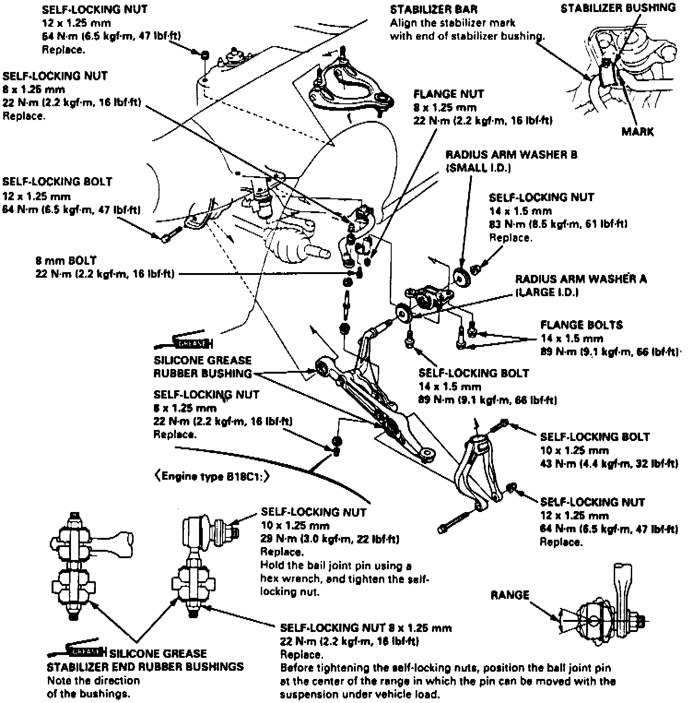
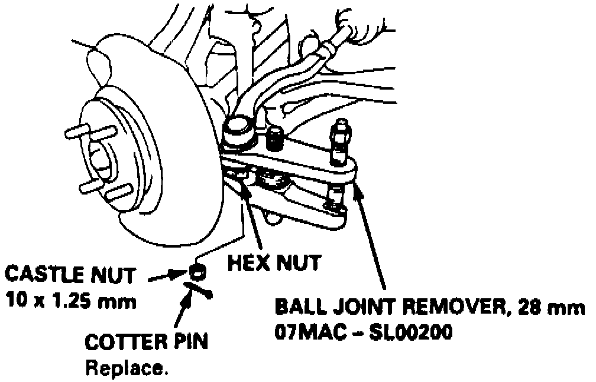

Front Steering Knuckle: Service and Repair
1. Raise and support vehicle, then remove front wheel and spindle nut.2. Without disconnecting hydraulic fitting, remove caliper and brake hose mounting bolts, then suspend caliper aside.
3. Remove brake disc retaining screws, then thread two 8mm bolts into disc and rotate bolts two turns at a time to force disc away from hub.
4. Remove and inspect brake disc, then remove ABS wheel sensor wire bracket and wheel sensor from knuckle. Do not disconnect wheel sensor connector.
Fig. 2 Exploded View Of Front Suspension:

5. Use a ball joint remover tool to separate ball joints from suspension or tie rod end, then remove cotter pin and castle nut from ball joint at tie rod end, Fig. 2.
Fig. 3 Knuckle/Hub Joint Removal:

6. Place a 10mm hex nut on ball joint as shown, Fig. 3, ensuring nut is flush with ball joint pin end.
7. Position ball joint remover over joint, Fig. 3, then turn adjusting bolt until remover jaws are parallel to one another and tighten pressure bolt until joint shaft breaks loose from steering arm.
8. Remove tool, then remove cotter pins and castle nuts from upper and lower arm ball joints.
9. Place a 12mm hex nut on lower arm ball joint in similar fashion as for steering arm ball joint, Fig. 3, ensuring nut is flush with ball joint pin end.
10. Use ball joint remover to separate ball joint from lower arm as shown for steering arm ball joint in Fig. 3, then remove tool.
11. Place a 12mm hex nut on upper ball joint in similar fashion as for steering arm ball joint, Fig. 3, ensuring nut is flush with ball joint pin end.
12. Use ball joint remover to separate ball joint from upper arm as shown for steering arm ball joint in Fig. 3, then remove tool.
13. Pull knuckle outward and separate driveshaft outboard joint from knuckle with a plastic hammer, then remove knuckle.
14. Reverse procedure to install, noting the following:
a. Install new cotter pins.
b. Tighten all bolts and nuts to specifications.